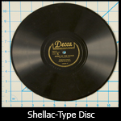
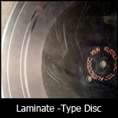
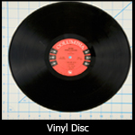

This audio format consists of a grooved disc made of shellac, acetate, nitrate, or vinyl. Some discs may have a metal, resin, cardboard, or glass core. The modulated sound information is inscribed in the surface material; these grooves are played back with a needle or stylus. Emerging in the late 1880s, phonograph records ruled from the 1910s through the late 1970s as the predominant recorded sound format.

Shellac 78 with original fiberboard sleeve. Though many discs will be found in these enclosures, they are not recommended for long-term storage and should be assumed acidic. Image by Flickr user DRs Kulturarvsprojekt, available under a Creative Commons Attribution ShareAlike license (CC BY-SA 2.0).13" (diameter) Shellac Disc. Shellac is often correlated with 10" 78s.Shellac disc broken along outer edge. Shellacs records are rigid and brittle; they do not flex like vinyl, and because they often do not have a reinforcing substrate like lacquered discs, they break easily.Shellac disc in fragments. Shellacs records are rigid and brittle; they do not flex like vinyl, and because they often do not have a reinforcing substrate like lacquered discs, they break easily.Shellac disc. Note the thickness at the disc's edge. Shellac discs are typically thicker than other discs.From this angle, the shellac disc's center spindle hole reveals that the disc has no substrate material. Image by Flickr user DRs Kulturarvsprojekt, available under a Creative Commons Attribution ShareAlike license (CC BY-SA 2.0). Courtesy of the Danish Broadcasting Corporation.Shellac disc grooves are considerably larger than those of a microgroove vinyl LP.Commercially pressed 78 disc labels are visibly pressed into the shellac, whereas most vinyl and lacquer discs are glued on. Image by Flickr user Leo Reynolds, available under a Creative Commons Attribution-NonCommercial-ShareAlike license (CC BY-NC-SA 2.0).Commercially pressed 78 disc labels are visibly pressed into the shellac, whereas most vinyl and lacquer discs are glued on. Image by Flickr user Oliver Hammond, available under a Creative Commons Attribution-NonCommercial-ShareAlike license (CC BY-NC-SA 2.0).10" 78rpm Shellac disc. Image courtesy of Aaron Coe, The Cutting Corporation.
Paper substrate fibers exposed through chipped edge.
Paper substrate fibers exposed through chipped edge (under magnification).
Synonyms
78 (rpm)
Wax record
Dates
c. 1897 – late 1950s
Common Size(s)
7"; 10"; 12"; 16" (diameter)
Description
Shellac-type is a coarse grooved-disc recorded sound format made up of shellac with varying components, typically including clay, slate, and limestone as filler, carbon black for color, cotton fibers for strength (originally known as Durinoid), and may contain other resins, plasticizers, and hardeners. Shellac discs are most commonly one of the following sizes: 7-inch, 10-inch, 12-inch, and 16-inch. They are typically played back at the following speeds: 70 rpm, 78 rpm, and 30 rpm (Stauderman, 2003).
Composition
Shellac-based disc, with a variety of additional filler and additive materials
Deterioration
All grooved disc media is susceptible to warpage, breakage, groove wear, and surface contamination (Farrington, 1991). Surface contamination includes dirt, dust, mold, and other foreign materials—all of which can abrade or damage the grooves and diminish playback sound quality. Excessive surface damage and groove wear are generally identifiable on discs which have a dull surface and scratches, pits, and cracks.
Risk Level
Shellac-type 78s manufactured post-WWI are relatively stable and not considered especially vulnerable to age-related deterioration or inherent vice (Paton, 1998). Pre-WWI discs may be composed of more volatile materials and may require greater preservation attention (IASA, 2003). Presently, playback equipment for this format is still being manufactured.
Playback
All grooved disc media must be played back at the appropriate recording speed, require appropriate styli for optimal playback fidelity and to reduce disc damage, and equipment that can support the discs' diameters. Most discs recorded before 1948 have wider grooves (often referred to as "coarse" or "standard" grooves), were recorded using equalizations that differ from current standards, and are generally monaural (Paton, 1998). A stylus which can support coarse groove and monaural recordings is necessary for proper playback.
Often, early 78s were not cut at exactly 78 rotations per minute (rpm), so correct speed may not be standardized from one disc to the next. Additionally, groove size varies, so a variety of different styli are necessary to ensure that you are not using too small or too wide of a stylus, which can adversely affect playback quality and/or irreparably damage the disc.
Background
The earliest discs are made of a shellac-type material, with various filler materials. Shellac 78s were produced from 1897 until the late 1950s, but declined steadily after World War II as labels shifted toward lacquered records.
Storage Environment
(±2°F; ±5% RH)
Temp/RH (ideal)
Temp/RH (acceptable)
40–54°F (4.5–12°C); 30–50% RH
33–44°F (0.5–6.5°C); 30–50% RH
Storage Enclosure(s)
Acid-free enclosures are strongly advised. Each item should have its own enclosure to protect it from dust, handling damage, and changes in environmental conditions. All storage materials should pass the Photographic Activity Test (PAT) as specified in ISO Standard 18916:2007. In all, this means they must be chemically and physically stable:
Plastic: Polyethylene, polypropylene or polyester (a.k.a. Mylar D or Melinex 516). No PVC or acetate.
Archival recordings might be found directly within a paper housing. These paper sleeves are problematic as they are typically acidic and will degrade on the recording surface, leaving behind "paper flour" deposits of dust, fibers, and flakes (Warren, 1994). Ideally, discs should be housed in a high density polyethylene sleeve. General rule: "bad" plastic sleeves are clear and have a sticky or tacky feel; "good" sleeves are frosted in appearance and have a slippery feel (Library of Congress). In many cases, the plastic-sleeved disc may be thin enough to fit in the original sleeve.
Some older discs are found housed in a paper binder; these discs should be removed and housed in individual sleeves as the binder is most likely made of acidic paper. Additionally, brittle discs (e.g. shellac) can get caught in the edge of a failing binder and can be damaged. Also remove any shrink wrap that is still on the outer sleeve, since it can continue to shrink and harm the original outer sleeve or the recording itself.
Storage Orientation
Similarly sized discs should be stored together vertically. Shelves should have full-height and full-depth dividers spaced 4 to 6 inches apart, secured at the top and bottom (Library of Congress, 2002). Grooved discs are heavy and can exert pressure—and warp—if too many discs are shelved together at an angle (without dividers).
Handling/Care
Discs, regardless of composition, should be handled by the edges only, with a hand at about 3 and 9 o’clock (so not to place stress on the disc), ideally with archival gloves on. Never leave media in a playback machine; always return to storage enclosure when not in use.
Lacquer Disc

13" Lacquer transcription disc. Multiple spindle holes in the center are typical for transcription discs. Lacquer transcription disc. Image by Flickr user Betsian, available under a Creative Commons Attribution-NonCommercial-ShareAlike license (CC BY-NC-SA 2.0).Voice-O-Graph home recording lacquer disc. Image courtesy of Aaron Coe, The Cutting Corporation.Home recording lacquer disc with flaking/delaminating exposing a metal substrate (core). Image courtesy of Aaron Coe, The Cutting Corporation.White-colored lacquer disc. In the home recording market, there were many bold trademark colors and label graphics. Image courtesy of Aaron Coe, The Cutting Corporation.16" Lacquer transcription disc in original paper sleeve. Low-grade paper enclosures like these are not recommended for long-term storage. Image of a recording from the University Archives. Image courtesy of the University of Illinois Board of Trustees.Palmitic acid deposits on a transcription disc's nitrocellulose laminate surface. Acids, like those left by fingerprints, will precipitate the formation of this white, dusty substance. Over time, these deposits can cause permanent damage to the recorded information. Hasty attempts to clean it off may do further harm.Palmitic acid deposits on transcription disc's nitrocellulose laminate surface. Acids, like those left by fingerprints, will precipitate the formation of this white, dusty substance. Over time, these deposits can cause permanent damage to the recorded information. Hasty attempts to clean it off may do further harm.Lacquer disc delamination. The nitrocellulose laminate is hygroscopic—it can swell and possibly delaminate when exposed to high humidity or water. This results in an absolute loss of recorded information. Image by Flickr user windthoek, available under a Creative Commons Attribution-NonCommercial-NoDerivs license (CC BY-NC-ND 2.0).Lacquer disc with cracked glass substrate. Image by Flickr user Brandon Burke, available under a Creative Commons Attribution-NonCommercial-NoDerivs license (CC BY-NC-ND 2.0).Laminate disc with exposed aluminum substrate. Image by Wikimedia Commons user Hux, available in the public domain.Laminate disc with exposed aluminum substrate.
Synonyms
Laminate disc
Transcription disc
Instantaneous disc
"Acetate" disc
Direct-cut disc
Dates
late 1920s – 1970s; popular 1930s – 1950s
Common Size(s)
7"; 8"; 10"; 12"; 13"; 16" (diameter)
Description
Lacquer discs are a grooved recorded sound format composed of cellulose nitrate or acetate cellulose lacquer on a core made of aluminum, steel, glass, or fiber (cardboard). The most common sizes include: 10-inch, 12-inch, 13-inch, or 16-inch; although atypical, smaller and larger disc sizes can be found in collections.
Composition
Disc core/substrate (aluminum, steel, glass, fiberboard) laminated with a lacquer (cellulose nitrate or acetate cellulose)
Deterioration
All grooved disc media is susceptible to warpage, breakage, groove wear, and surface contamination (Farrington,1991). Surface contamination includes dirt, dust, mold, and other foreign materials—which can abrade or damage the grooves and diminish playback sound quality. Excessive surface damage and groove wear are generally identifiable on discs which have a dull surface and scratches, pits, and cracks. Lacquer discs are prone to unpredictable and sudden catastrophic failure due to surface delamination; the lacquer coating can contract on the core, often due to being stored in an environment with high humidity and/or temperature. It can crack or peel away from the core, causing information loss. Additionally, these discs may suffer from plasticizer loss, which causes the disc coating to become brittle and can lead to delamination. Plasticizer loss, or exudiation, is identifiable as a white, greasy powder with a crystalline appearance that appears on the disc's surface. It is often mistaken for mold, but is in fact the fatty acids (palmetic or searic) which migrate to the disc's surface as the plasticizers begin to deteriorate.
Risk Level
Lacquer discs are prone to unpredictable and sudden catastrophic failure due to surface delamination; the lacquer coating can contract on the core, often due to being stored in an environment with high humidity and/or temperature, and can crack, causing information loss. Additionally, lacquer discs often contain unique and original material, since content is captured and inscribed to the disc immediately. These discs are not created through a molding process like most other types of grooved discs. Instead, the discs are "direct-cut": the same discs are used for both the recording and the replay without the need for galvanoplastic processing and pressing (Paton, 1998). Since these discs are prone to sudden failure and signal loss and often hold unique content, they are considered a high priority for preservation reformatting.
Playback
All grooved disc media must be played back at the appropriate recording speed, require appropriate styli for optimal playback fidelity and to reduce disc damage, and equipment that can support the discs' diameters. Lacquer discs may also play from the inside out; the starting groove begins near the center of the disc, opposite of how most LP records are played. Most discs recorded before 1948 have wider grooves (often referred to as "coarse" or "standard" grooves), were recorded using equalizations that differ from current standards, and are generally monaural (Paton, 1998). A stylus which can support coarse groove and monaural recordings is necessary for proper playback.
Background
Lacquer discs were in use predominantly in the 1930s to 1940s, until magnetic tape became widely adopted. Often found among early to mid-20th century broadcast collections, the radio transcription disc was a form of lacquer disc cut for use at a later broadcast time. They were often used to record radio programs and field recordings, as well as office/home dictation.
Storage Environment
(±2°F; ±5% RH)
Temp/RH (ideal)
Temp/RH (acceptable)
40–54°F (4.5–12°C); 30–50% RH
33–44°F (0.5–6.5°C); 30–50% RH
Storage Enclosure(s)
Acid-free enclosures are strongly advised. Each item should have its own enclosure to protect it from dust, handling damage, and changes in environmental conditions. All storage materials should pass the Photographic Activity Test (PAT) as specified in ISO Standard 18916:2007. In all, this means they must be chemically and physically stable:
Plastic: Polyethylene, polypropylene or polyester (a.k.a. Mylar D or Melinex 516). No PVC or acetate.
Archival recordings might be found directly within a paper housing. These paper sleeves are problematic as they are typically acidic and will degrade on the recording surface, leaving behind "paper flour" deposits of dust, fibers, and flakes (Warren, 1994). Ideally, discs should be housed in a high density polyethylene sleeve. General rule: "bad" plastic sleeves are clear and have a sticky or tacky feel; "good" sleeves are frosted in appearance and have a slippery feel (Library of Congress). In many cases, the plastic-sleeved disc may be thin enough to fit in the original sleeve.
Some older discs are found housed in a paper binder; these discs should be removed and housed in individual sleeves as the binder is most likely made of acidic paper. Additionally, brittle discs (e.g. shellac) can get caught in the edge of a failing binder and can be damaged. Also remove any shrink wrap that is still on the outer sleeve, since it can continue to shrink and harm the original outer sleeve or the recording itself.
Storage Orientation
Similarly sized discs should be stored together vertically. Shelves should have full-height and full-depth dividers spaced 4 to 6 inches apart, secured at the top and bottom (Library of Congress, 2002). Grooved discs are heavy and can exert pressure—and warp—if too many discs are shelved together at an angle (without dividers). Store acetate discs separately from other materials so to mitigate the effects of acetic acid decomposition (e.g. off-gassing).
Handling/Care
Discs, regardless of composition, should be handled by the edges only, with a hand at about 3 and 9 o’clock (so not to place stress on the disc), ideally with archival gloves on. Never leave media in a playback machine; always return to storage enclosure when not in use.
Vinyl Disc

Vinyl LP (33⅓rpm) record, measuring 12" in diameter.Vinyl LP record detail. Note the gaps between intermittent variances in grooves—these are evident gaps of silence between songs, typical for music LPs (12") and EPs (10").LP grooves viewed in raking light. Also note record thickness and rounded edge. Image by Flickr user Sami Pyylampi, available under a Creative Commons Attribution-ShareAlike license (CC BY-SA 2.0).LP grooves viewed in raking light. Also note record thickness and rounded edge. Image by Flickr user Peter Organisciak, available under a Creative Commons Attribution-ShareAlike license (CC BY-SA 2.0).45(rpm) single, measuring 7" in diameter. Image by Flickr user Elvert Barnes, available under a Creative Commons Attribution-ShareAlike license (CC BY-SA 2.0).Most vinyl disc labels are glued onto surface, whereas most commercially pressed shellac disc labels are visibly embedded into the shellac surface. Image by Flickr user John Keogh, available under a Creative Commons Attribution-NonCommercial license (CC BY-NC 2.0).Red vinyl record. Image by Wikimedia Commons user Alex:D, available under a Creative Commons Attribution-ShareAlike license (CC BY-SA 3.0).
Synonyms
Microgroove
Long play (LP)
12-inch; 7-inch (single)
Dates
c. 1948 – present
Common Size(s)
7"; 10"; 12" (diameter)
Description
Vinyl is a grooved disc audio format composed of polystyrene or polyvinyl chloride with stabilizers. There are also designations such as the "long playing" (LP) record, "extended play" (EP) record, or "single." In these cases, the diameter and playback speed (revolutions per minute, or "rpm") are often used interchangeably to refer to the disc format subtype. For instance, a "12-inch" (LP) is conventionally played at 33⅓ rpm. A "7-inch" (single) is played at 45 rpm, and may also be referred to as a "45." The most common sizes are: 7-inch, 10-inch, and 12-inch.
Composition
Polyvinyl chloride (vinyl) or polystyrene disc
Deterioration
All grooved disc media is susceptible to warpage, breakage, groove wear, and surface contamination (Farrington,1991). Surface contamination includes dirt, dust, mold, and other foreign materials—all
of which can abrade or damage the grooves and diminish playback sound quality. Vinyl discs are especially prone to scratches and abrasion due to its relatively soft material. If stored in an ideal environment (relatively low and stable temperature and humidity), vinyl discs are stable. However, high humidity and temperatures can adversely affect these discs by creating prime conditions for fungal growth. High temperatures may also cause the plastics to soften and warp, reducing the disc's sound quality or playability. Additionally, direct sunlight and UV rays can adversely affect the soft vinyl material.
Discs can be damaged by attendant materials such as acidic cardboard sleeves and non-archival inner plastic or paper sleeves, although some plastic sleeves may be acceptable for archival storage. As a rule of thumb, "bad" sleeves are clear and have a sticky or tacky feel; "good" sleeves are frosted in appearance and have a slippery feel (Library of Congress, 2002). Non-archival sleeves should be replaced with high density polyethylene sleeves. If the original paper sleeve contains graphics or artwork that are of archival value, some archival sleeves may be thin enough to fit inside the original. In order to prevent migration of materials to the disc's surface, "many archivists choose to store microgroove discs in neutral plastic inner liners made of high pressure polyethylene contained in neutral envelopes, with acidic original covers stored separately" (Warren, 1993).
Risk Level
Vinyl-type 45s and LPs are not presently considered especially vulnerable to age-related deterioration or inherent vice (Paton, 1998). They are generally chemically stable and have a relatively long lifespan when stored properly. Playback equipment is still being manufactured. Therefore, discs of this type are generally a low preservation priority.
Playback
All grooved disc media must be played back at the appropriate recording speed, require appropriate styli for optimal playback fidelity and to reduce disc damage, and equipment that can support the discs' diameters. Most discs of this type are microgroove; they have nearly twice the number of grooves as a coarse groove disc. Often times, these discs are stereo with standard equalization. However, "it is not wise to assume either that all postrecordings are microgroove, or that all recordings made after 1955 are stereo with RlAA equalization. Only examination of the discs and supporting documentation will clarify groove type" (Paton, 1998). Using too large of a stylus and too heavy weight tracking can gouge out the grooves on the disc, irreparably damaging the disc and preventing future playback.
Background
Plastic-based discs were developed in the late 1940s and are still in use.
Storage Environment
(±2°F; ±5% RH)
Temp/RH (ideal)
Temp/RH (acceptable)
40–54°F (4.5–12°C); 30–50% RH
33–44°F (0.5–6.5°C); 30–50% RH
Storage Enclosure(s)
Acid-free enclosures are strongly advised. Each item should have its own enclosure to protect it from dust, handling damage, and changes in environmental conditions. All storage materials should pass the Photographic Activity Test (PAT) as specified in ISO Standard 18916:2007. In all, this means they must be chemically and physically stable:
Plastic: Polyethylene, polypropylene or polyester (a.k.a. Mylar D or Melinex 516). No PVC or acetate.
Archival recordings might be found directly within a paper housing. These paper sleeves are problematic as they are typically acidic and will degrade on the recording surface, leaving behind "paper flour" deposits of dust, fibers, and flakes (Warren, 1994). Ideally, discs should be housed in a high density polyethylene sleeve. General rule: "bad" plastic sleeves are clear and have a sticky or tacky feel; "good" sleeves are frosted in appearance and have a slippery feel (Library of Congress). In many cases, the plastic-sleeved disc may be thin enough to fit in the original sleeve.
Some older discs are found housed in a paper binder; these discs should be removed and housed in individual sleeves as the binder is most likely made of acidic paper. Additionally, brittle discs (e.g. shellac) can get caught in the edge of a failing binder and can be damaged. Also remove any shrink wrap that is still on the outer sleeve, since it can continue to shrink and harm the original outer sleeve or the recording itself.
Storage Orientation
Similarly sized discs should be stored together vertically. Shelves should have full-height and full-depth dividers spaced 4 to 6 inches apart, secured at the top and bottom (Library of Congress, 2002). Grooved discs are heavy and can exert pressure—and warp—if too many discs are shelved together at an angle (without dividers).
Handling/Care
Discs, regardless of composition, should be handled by the edges only, with a hand at about 3 and 9 o’clock (so not to place stress on the disc), ideally with archival gloves on. Never leave media in a playback machine; always return to storage enclosure when not in use.
Aluminum Disc
11" Aluminum disc. Courtesy of Jack Brighton, Illinois Public Media / WILL.Aluminum disc. Image courtesy of Aaron Coe, The Cutting Corporation.Aluminum disc grooves. Courtesy of Jack Brighton, Illinois Public Media / WILL.
Synonyms
Voice Record
Fairchild disc
Aluminum transcription disc
Dates
Late 1920s – 1940s
Common Size(s)
10"; 12"; 16" (diameter)
Description
The aluminum disc recording is a relatively obscure phonograph format for one-off home and radio transcription recordings in the late 1920s through 1940s. Unlike any other phonograph, the aluminum transcription disc is plainly identifiable as uncoated, bare aluminum. These records have a limited dynamic range and inferior sound quality. The recording should be assumed to be unique and will require a delicate fiber stylus for responsible playback (see below).
Composition
Aluminum (uncoated)
Deterioration
All grooved disc media is susceptible to warpage, breakage, groove wear, and surface contamination (Farrington,1991). Surface contamination includes dirt, dust, mold, and other foreign materials—all of which can damage the grooves and diminish playback sound quality. Aluminum disc recordings are rough sounding by nature, but care must be taken to preserve the signal etched into the relatively soft aluminum. If stored in an ideal environment (relatively low and stable temperature and humidity), these discs are stable. However, high humidity and temperatures can adversely affect these discs by creating prime conditions for corrosion and fungal growth.
Discs can be damaged by attendant materials such as acidic cardboard sleeves and non-archival inner plastic or paper sleeves, although some plastic sleeves may be acceptable for archival storage. As a rule of thumb, "bad" sleeves are clear and have a sticky or tacky feel; "good" sleeves are frosted in appearance and have a slippery feel (Library of Congress, 2002). Non-archival sleeves should be replaced with high density polyethylene sleeves. If the original paper sleeve contains graphics or artwork that are of archival value, some archival sleeves may be thin enough to fit inside the original.
Risk Level
Aluminum discs are not considered especially vulnerable to age-related deterioration or inherent vice. They are generally chemically stable and have a relatively long lifespan when stored properly. However, neglectful playback may damage the recorded information. Aluminum disc grooves were intended for wooden needles and similarly forgiving styli; playback with a modern standard-issue stylus can do irreparable damage to the grooves (see Playback below). There are lightweight styli designed for use with 78s that can usually handle aluminum discs. Regardless, discs of this type are generally a mid-level preservation priority.
Playback
Aluminum disc grooves are suprisingly malleable, originally intended for use with wooden needles and similarly forgiving fiber styli (e.g. cacti or bamboo needle). Just one playback with a modern standard-issue steel stylus can do irreparable damage to the grooves. There are some lightweight styli designed for use with 78s that may also handle aluminum discs. Using too large of a stylus and too heavy weight tracking can carve at the grooves on the disc, irreparably damaging the recorded information and preventing future playback. Select playback equipment with caution.
All grooved disc media must be played back at the appropriate recording speed, require appropriate styli for optimal playback fidelity and to reduce disc damage, and equipment that can support the discs' diameters.
Background
Before nitrocellulose-lacquered discs came into widespread use in broadcast and home recording spheres in the 1940s, bare aluminum discs were used for one-off recording applications. Introduced in the late 1920s, they saw a modest adoption in the 1930s in radio as transcription discs used for event capture and sponsor spots, though also in coin-operated "record-your-voice" booths and amateur recording studios. On their way out by the early 1940s, many of these discs met their fate in World War II scrap metal drives.
Storage Environment
(±2°F; ±5% RH)
Temp/RH (ideal)
Temp/RH (acceptable)
40–54°F (4.5–12°C); 30–50% RH
33–44°F (0.5–6.5°C); 30–50% RH
Storage Enclosure(s)
Acid-free enclosures are advised. Each item should have its own enclosure to protect it from dust, handling damage, and changes in environmental conditions. All storage materials should pass the Photographic Activity Test (PAT) as specified in ISO Standard 18916:2007. In all, this means they must be chemically and physically stable:
Plastic: Polyethylene, polypropylene or polyester (a.k.a. Mylar D or Melinex 516). No PVC or acetate.
Archival recordings might be found directly within a paper housing. These paper sleeves are problematic as they are typically acidic and will degrade on the recording surface, leaving behind "paper flour" deposits of dust, fibers, and flakes (Warren, 1994). Ideally, discs should be housed in a high density polyethylene sleeve. General rule: "bad" plastic sleeves are clear and have a sticky or tacky feel; "good" sleeves are frosted in appearance and have a slippery feel (Library of Congress). In many cases, the plastic-sleeved disc may be thin enough to fit in the original sleeve.
Some older discs are found housed in a paper binder; these discs should be removed and housed in individual sleeves as the binder is most likely made of acidic paper. Also remove any shrink wrap that is still on the outer sleeve, since it can continue to shrink and harm the original outer sleeve or the recording itself.
Storage Orientation
Similarly sized discs should be stored together vertically. Shelves should have full-height and full-depth dividers spaced 4 to 6 inches apart, secured at the top and bottom (Library of Congress, 2002). Grooved discs are heavy and can exert pressure—and warp—if too many discs are shelved together at an angle (without dividers).
Handling/Care
Discs, regardless of composition, should be handled by the edges only, with a hand at about 3 and 9 o’clock (so not to place stress on the disc), ideally with archival gloves on. Never leave media in a playback machine; always return to storage enclosure when not in use.
Disc Composition
Grooved discs are generally composed of either shellac, lacquer, or vinyl (uncoated aluminum omitted here). If lacquered, the core of the disc will either be aluminum (most common), steel, glass, or fiberboard.
Composed of some type of plastic or resin (usually nitrocellulose) surrounding a core
Core can be cardboard, aluminum, or glass; glass discs are most fragile
Handwritten or non-commercially printed label, if labeled
Viewing spindle holes at an angle may reveal a glint of metallic or brownish, paper-like material (core material)
Contain more than one spindle hole (typically); extra holes may be obscured by a label, but can be determined by shining a light source through.
May exhibit surface peeling (delaminating); if delaminating, and another material is observable, the disc is laminated (and thusly this also means the media is failing).
Heavier than vinyl and lighter than shellac, though this depends on the core material
Less flexible than a vinyl disc, and less rigid than shellac (typically)
Occur in a variety of diameters ranging from 20" to 16" to 7"
Radio transcription discs are often 16" lacquer discs
Lacquer discs can be made of cellulose nitrate on a core. The core can be made of a number of varying materials, including glass, aluminum, and cardboard. These discs are susceptible to surface and core deterioration. The surface coating is prone to shrinking away from the core and to plasticizer loss, which appears as a whitish, mold-like contamination on the surface. Glass cores can easily break if not handled gently. Additionally, the core, depending on the material, is especially susceptible to damage from humidity.
How to identify a glass core:
Shine some type of light source upwards from beneath the disc, or, ideally set the disc on light table. If the disc appears translucent (light is visible through the disc), it is most likely glass.
Glass core discs:
EXTREMELY FRAGILE. Can easily break, or crack beneath the lacquered surface
Semi-translucent when light is projected through them
If GENTLY tapped, will sound slightly different than aluminum discs. WARNING: Tap EXTREMELY gently as the glass may already be damaged
Slightly heavier compared to aluminum-based discs
Do not warp like fiber- or aluminum-based lacquer discs
Most often are recordings between 1941 and 1945
Lacquer disc with cracked glass substrate. Image by Flickr user Brandon Burke, available under a Creative Commons Attribution-NonCommercial-NoDerivs license (CC BY-NC-ND 2.0).
When assessing the condition of the disc, observe if there is any coating flaking off of the core. The coating holds the information content and grooves; it is therefore especially important to note any loss of the surface coating.
Laminate disc with exposed aluminum substrate. Image by Wikimedia Commons user Hux, available in the public domain.
Also look for a whitish powder on the surface. This could be mold, plasticizer loss, or other residue. The best way to determine if the contamination is mold is to observe the surface under a microscope. If the contaminant looks fuzzy or lattice-like, it is most likely mold; other substances may have a more crystalline appearance. Lacquer discs are often of high priority for reformatting due to their fragility. As lacquers are direct-cut discs (that is, the content is etched directly into the disc at the time of recording) they are often unique and the content may not be found elsewhere.
Palmitic acid deposits on transcription disc's nitrocellulose laminate surface. Acids, like those left by fingerprints, will precipitate the formation of this white, dusty substance. Over time, these deposits can cause permanent damage to the recorded information. Hasty attempts to clean it off may do further harm.
Shellac
Summary:
Oldest type of phonograph record; a disc manufactured prior to the late 1920s is most likely shellac
Commercial recordings, and should have commercially produced center labels
Heavier than vinyl or lacquer (typically), especially if the disc is thick
Slightly thicker than vinyl or lacquers; a notable exception is the wood-pulp core, and lacquered Edison Diamond disc which is approximately 1/4" thick!
Very hard, rigid compared to vinyl or lacquers (thusly not as flexible as the others)
Duller surface compared to well-preserved vinyl or lacquer
Prone to shattering when dropped or bent
Shellac discs are primarily composed of clay (Byritis), powdered shellac, lampblack, cotton fibers (originally known as Durinoid), and may contain other resins, plasticizers, hardeners, and fillers (Stauderman, 2003). Most shellac discs are solid throughout; the core is generally not composed of a separate material. There are some instances, however, when a shellac disc may have a cardboard core. These discs tend to be very hard, become brittle with age, are prone to shattering if dropped, and are susceptible to damage by mold and acidic substances (Warren, 1994).
Shellac discs may not scratch as easily as vinyl and are generally stable if they have been stored in dry conditions. When examining these discs, you may notice signs of surface damage such as dirt, dust, mold, scratches, groove wear (the disc appears dull and the surface may have a whitish appearance), and brittleness. Be especially aware that shellac laminate discs (discs with a core made of cardboard or other material that is coated with shellac) can be more fragile. You may be able to assess if the disc is laminated if you gently lift the record, tilt it slightly so that you can see into the center spindle hole, and look for any indication that the shellac is not solid. For example, you may actually see cardboard by looking through the spindle hole. When cleaning shellac discs, DO NOT use fluids that contain alcohol as it can dissolve the shellac (Gibson, 1987).
Shellac: Broken edge to illustrate this disc is solid shellac throughout
Vinyl/Plastic
Summary:
Most recent phonograph record type, and is still presently in use
Commercially produced (typically), and should have a commercially printed label
Generally thinner and more flexible than lacquer or shellac
Compared to shellac and other grooved disc materials, plastic is relatively soft. It is more susceptible to surface damage from abrasion, resulting in scratches and pits that affect the quality of playback. It is also especially susceptible to damage through contact with acidic substances, uneven pressures, hard materials, and high temperatures (Warren, 1994). Humidity levels and age can also affect the plastic; dry conditions and natural aging can cause embrittlement. Recordings with a dull surface, scratches, and pits may have been damaged through heavy use.